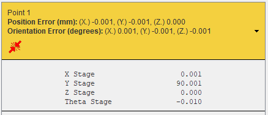
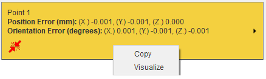
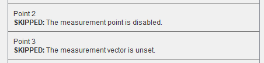
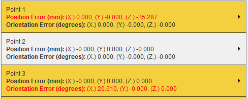
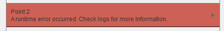
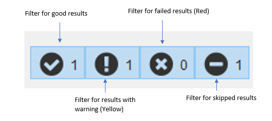
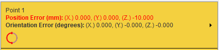
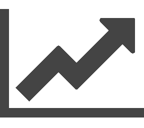
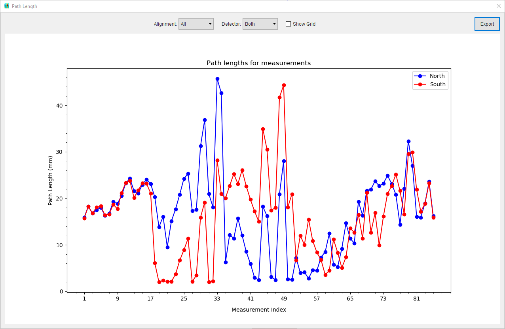
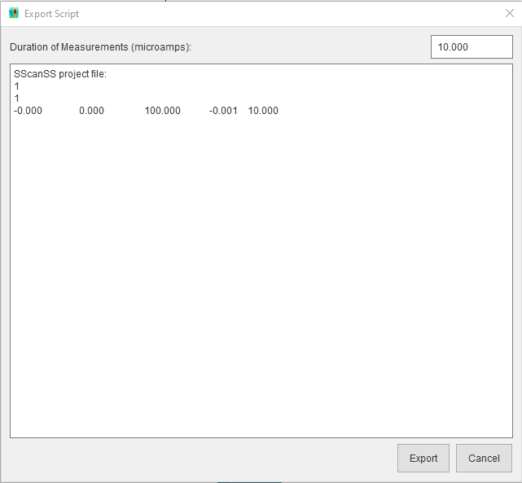

Simulating Experiments¶
The main goal of SScanSS is to compute positioner offsets for the real-world experiment. This can be achieved by running a simulation. To run a simulation, click Simulation > Run Simulation and to stop the simulation, click Simulation > Stop Simulation.
Tip
You can start and stop a simulation using keyboard shortcuts F5 and Shift+F5 respectively
{kind=link}
The Simulation Result window should open shortly after the simulation is started and the results will be appended incrementally to a list in the window. The progress bar shows the number of measurements that have been completed. The Simulation Result window cannot be closed while the simulation is running, stop the simulation if you need to close the dialog.
Note
You might experience a slight lag between starting a simulation and the opening of the Simulation Result window while this is not a serious issue it is a known problem.
After closing the window, you can view and export completed results without re-running the simulation by opening the Simulation Result window, to do this click View > Other Windows > Simulation Results. The result for each measurement point and alignment can be seen in the result list. The result shows the point index and alignment index (where applicable), the 3D position and orientation error. The result will also show path length, and collision information when they are enabled in the Quick settings. Clicking on the label for a single result will reveal the computed positioner offsets which could be useful for quick verification.
{kind=link}
The positioner offsets can be copied to the operating system clipboard by right clicking on the label and selecting copy. When a simulation is complete, individual result can be visualized by right clicking on the label and selecting visualize.
{kind=link}
Any results that are skipped, for example, because the measurement point is disabled will be shown in the result list with the reason why the measurement is skipped.
{kind=link}
The simulation may not achieve the desired positional or orientational accuracy because of joint limits, insufficient degrees of freedom, or the software’s failure to converge. The label for such results will be highlighted in yellow and the poor accuracy will be written in red text.
{kind=link}
While very rare, the simulation may crash because of errors in the optimization library. The software will log the error on the problematic point and attempt to continue the remaining measurements in the simulation. The label for such results will be highlighted in red.
{kind=link}
The filter buttons at the top of the Simulation Result window shows the number of the good results, results with warnings (i.e. collision, hardware limit violation, unconverged etc.), failed results and skipped results. Toggling off any of the buttons will hide the appropriate results from the result list while toggling the button on will show the result, for example, toggling off the first button will hide the good results only and show the other results in the result list. The skipped result filter will be visible only when there are skipped results in the result list.
{kind=link}
Understanding Results¶
For simple positioners such as a positioning table, the software will attempt to determine the reason for non-convergence via a set of heuristics. If a reason is found, the result ui will include an icon for the reason as shown below and hovering over the icon with the mouse will give a short description:
{kind=link}
The icon denotes that the result did not converge because of a hardware limit violation. This problem can be fixed by changing the sample alignment or by disabling the hardware limit check and re-running the simulation.
{kind=link}
The icon denotes that the result did not converge because the requested orientation is unreachable by the positioner. This problem can be fixed by changing the sample alignment, by modifying the measurement vectors, or using a positioning system with more degrees of freedom.
{kind=link}
The icon denotes that the result did not converge because the angle between measurement vectors do not match the angle between the q-vectors of the instrument. This problem can be fixed by modifying the measurement vectors.
{kind=link}
If the reason for non-convergence cannot be found, it is recommended to re-run the simulation with hardware limits disabled and also take a close look at the measurement vectors to ensure that the orientation can be achieved by the positioner. Also modifying the optimization setting could improve convergence for more complex positioning systems.
Quick settings¶
The Simulation menu has a few quick settings which can be applied to each simulation run. Changing the quick settings will not affect an active simulation, the simulation needs to be restarted for the setting to take effect.
Visualization¶
Visualization is enabled for simulations by default, it can be toggled by clicking Simulation > Show Graphically. Disabling visualization will increase the speed of the simulation while not significant for a small number of measurements, simulations with 100 or more measurements may benefit from the speed increase if visualizing the sample position is unimportant.
Hardware limit¶
During simulation, positioning system limits are checked by default, this can be toggled by clicking Simulation > Hardware Limits Check When disabled, all the joint limits on the positioning system are ignored (to ignore the limit on a single joint see Positioning system). When enabled, any joint limits that are not explicitly disabled in the positioning system window will be checked.
Collision detection¶
Collision detection is disabled by default, it can be toggled by clicking Simulation > Collision Detection. When activated, SScanSS 2 will check for collisions at the final sample pose of each measurement and highlight the colliding bodies in the graphic window (if Show Graphically is enabled). The simulation results will also indicate the point and alignment at which the collision occurred with the icon.
{kind=link}
Warning
Even though the collision detection in SScanSS 2 is reasonably robust, it should not be a substitute for your eyes but a complement. The following should be taken into account:
The software cannot check collisions for objects that are not present such as sample holders, or incomplete models of the sample or instrument.
The software only checks for collisions at the final sample pose of a measurement but the path to the pose is not checked. It is very possible that the object can collide on its way to the final pose.
Instrument 3D model could differ from real-world because it is a simplification or out of date.
Path length calculation¶
Path length calculation is disabled by default, it can be toggled by clicking Simulation > Compute Path Length. Path lengths are calculated by checking the distance the beam travels within the sample. It assumes that the beam starts outside the sample and every pair of face intersections is taken as beam entry and exit from the sample. The path length is set to zero if beam hits the gauge volume outside the sample or an entry/exit face pair is not found.
Warning
The path length might be incorrect if the sample has missing faces or spurious faces due to poor scanning that intersect with the beam.
The computed path lengths for each measurement will be written into the simulation results and a plot of the path lengths for each alignment group can be viewed by clicking the plot  button in the Simulation Result window.
{kind=link}
{kind=link}
In the plot dialog, the path lengths can be grouped by vector alignment or detector using the provided drop-down list, when more than one detector or vector alignment is present. A grid can be displayed on the plot by clicking on the Show Grid checkbox. The path length values can also be exported as a PNG image or a text file by clicking the Export button on the dialog and selecting the desired file type in the save file dialog.
Export script¶
After the simulation is completed, the generated scripts can be exported by clicking File > Export > Script or by clicking the export button on the Simulation Result window. The Export Script dialog wil open, specify the microamps for the experiment if necessary, and click the export button. The dialog also shows a preview of the script (only a maximum of 10 results are shown in the preview).
{kind=link}
{kind=link}
Advanced options¶
More advanced option for simulation can be accessed by clicking Simulation > Simulation Options. The following options can be changed from the dialog:
Note
SScanSS 2 uses global optimization technique to solve the inverse kinematics problem for each measurement. The optimization is a two-phase method that combines a global sampling algorithm with local minimization at each step.
Zero Measurement Vector
During simulation, when all the measurement vectors for a particular measurement are zero vectors, the software can be configured to translate the sample and keep orientation fixed (Perform translation but no rotation) which is the default or to skip those measurements (Skip the measurement).
Execution Order
When a project contains more than one measurement vector alignment, experiments can be run by measuring each point before changing the alignment (Run next point before alignments) or by measuring each alignment before moving to the next point (Run alignments before next point).
Position termination tolerance
The desired position accuracy which when achieved the positional part of the inverse kinematics is considered successful
Orientation termination tolerance
The desired orientation accuracy which when achieved the orientational part of the inverse kinematics is considered successful
Number of evaluations for global optimization
The maximum number of evaluations of the inverse kinematics objective function by the global optimizer
Number of evaluations for local optimization
The maximum number of evaluations of the inverse kinematics objective function by the local optimizer